Lab 3: Seeing Flow with Fish-Shaped Bodies

Our Goals
- Design 3 shapes of equivalent frontal area to pull through dyed water to see if creeping, laminar, and turbulent flow can be observed by pulling the shapes through the water at different speeds
- By repeating this process with water filled with pieces of black pepper, use Particle image Velocimetry (PIV) to see if these same results can be observed through that testing medium
- Using that PIV and the shape velocity data determine the force of drag present on the shapes as they move through the water.
Our Setup
- For this lab we needed something similar to a casserole dish or plastic clear plastic bucket. I own neither. In its place I found a clear desk organizer in my basement left by a previous tenant. Here is is sitting on my counter filled with pepper.
- A benefit of this desk organizer is that it has a slot down the middle of it for a divider to fit into, this slot was 3mm wide which is just wide enough to keep the M3 bolts used to build the fish together in line so that the fish was only traveling in precisely the x-direction even if our pulls were not exact.
- This location was picked because of its position between the window lights, range hood light, and general kitchen lights.
- Additionally, the it has the corner cabinet above it which made for a useful position for the camera. The metal phone holder in my cabinet is where my phone was placed.
- The tape measure is taped down the centerline of the fish, frankly because I don’t own any string but I do own 4 different tape measures. Conveniently, this does allow from for velocity calculations be found easily from the videos.
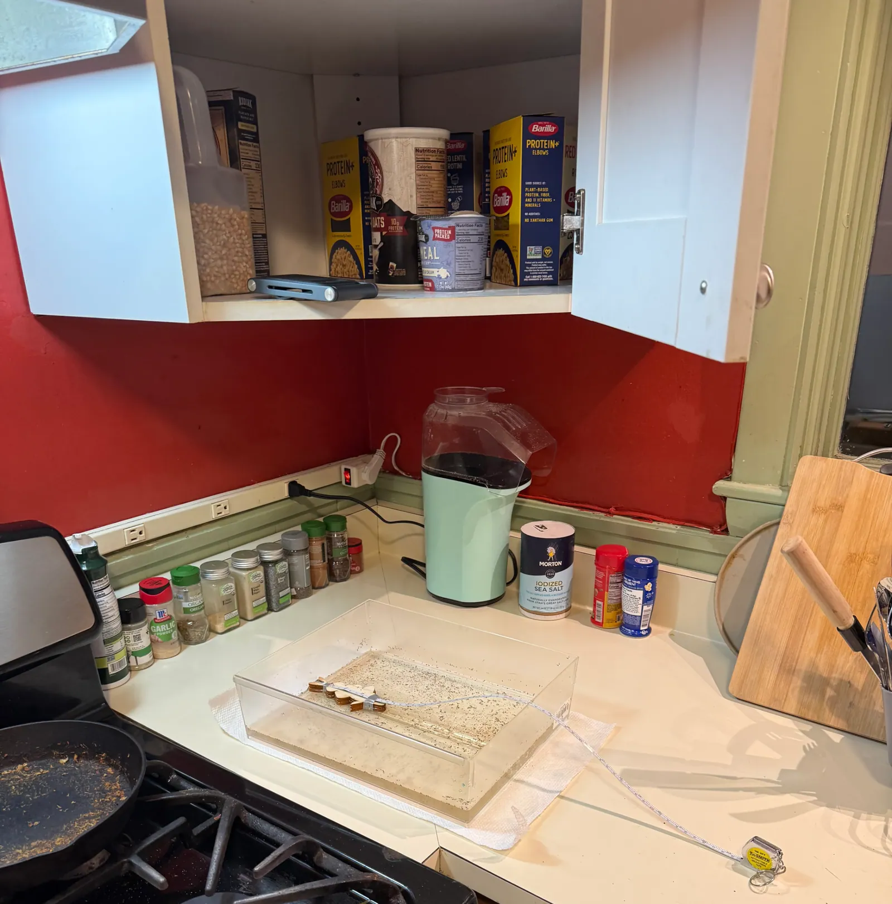
Schematic of this setup (Front View)
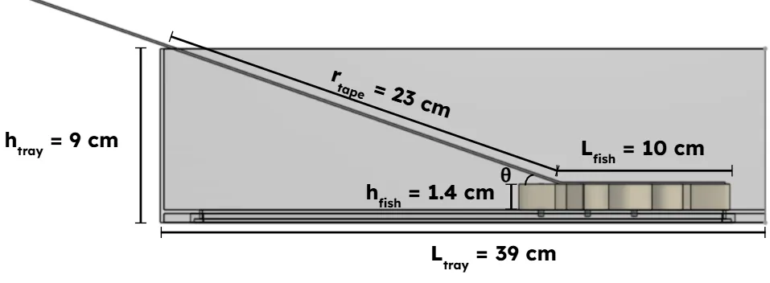
Top view — The Fish Moves Right to Left in this Image
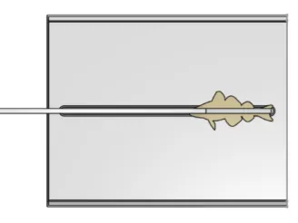
Our Shapes
Frank, the Finless Fish
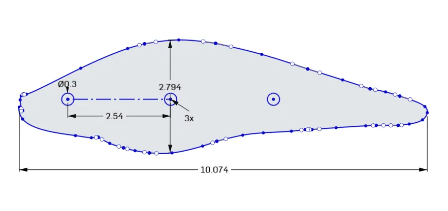
My first idea for this project was to use a model of the fish that Chris Rogers had spoken so excitedly about a few lectures about (not quite as excitedly as he spoke about the urethras across the animal kingdom, but I really didn’t want to laser cut urethras)
Unfortunately, real fish have all these fins that make modeling that greatly increase the complexity of the streamlines that go around them. As such, this fish (specifically a cod because we are in Massachusetts after all) has had all of its fins removed, leaving a profile that resembles an airfoil pretty closely. We shall see if the streamlines around it match that of the airfoil as well.
Abstract Finless Fish (AFF)
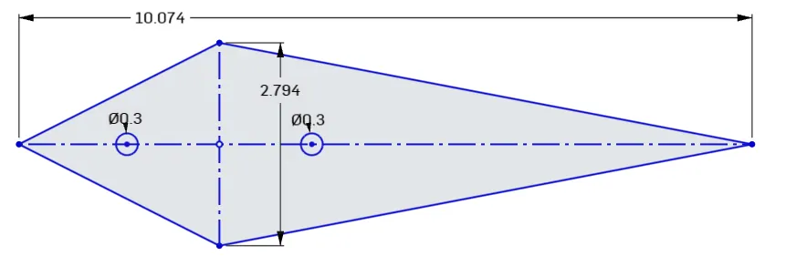
Since modeling complex shapes in COMSOL is not a skill that I have yet perfected, I decided to create what I am calling an “abstract finless fish”. Some folks might call it a “kite” or even a “diamond” but they just being squares and I feel bad that they have no sense of whimsy in their lives.
This Abstract Finless Fish (AFF) comes standard with 4 straight lines sides, 0 fins, and a perfectly mirrored body along the x-axis. It also has the same length and maximum width as the finless fish to act as a control for testing.
Finn, the Finned Fish
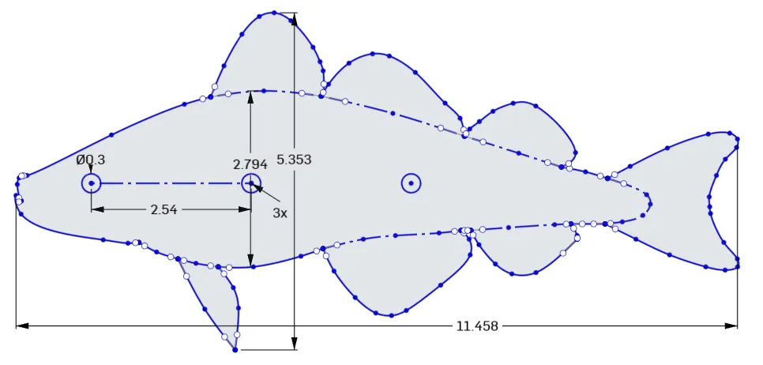
All in all, I did end up feeling bad about cutting all of the fins off of this cod to subject it to a series of scientific tests. Therefore, I did the only rational thing and laser cut out another version of this fish with fins included, named it Finn and subjected it to the tests just the same as its finless brethren.
Due its fins, Finn is both longer and wider than Frank the Finless Fish and the Abstract Finless Fish. This means that most of the data that can be gathered from the experiments with Finn will be qualitative as opposed to quantitative data that it is our goal to collect for the comparison of the previous two shapes.
Our Process:
Manufacturing:
- The three shapes (Frank, Finn, and the Abstract Finless Fish) were modeled the CAD program OnShape, with 0.3 cm circles placed along their midlines to make space for M3x10 bolts.
- All three shapes were cut out of scrap 3mm birch wood using the laser cutters in the Nolop makerspace.
- M3x10 bolts were placed through these holes and fastened using a simple washer and nut setup.
- A tape measure was then taped to their topsides using Duct Tape because of its water proofing abilities and its mostly presence in my desk in my apartment.
- To prepare the tray for the experiment, the divider was removed from the slot running down its center and the hole was sealed from the bottom with packing tape (this took 7 tries to get right due to the complexity of the geometry on the bottom of the tray, so my kitchen floor did get rather wet).
- It was then placed on paper towels to increase the contrast between the navy blue dye/ground black pepper and the background.
Using the setup above each fish
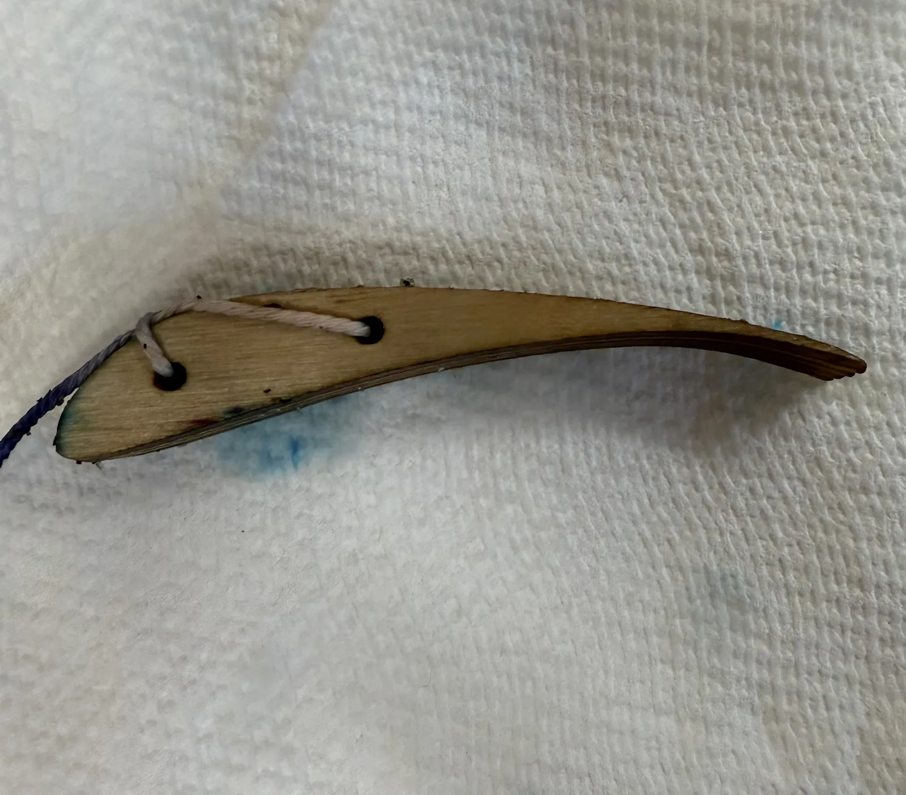
- We created a relatively steep airfoil shape which is interesting because we can try and visualize the flow that creates strong lift and early flow separation. The visible vortex patterns also make it interesting when visualizing aerodynamic performance and efficiency.
Dye motion:
- Filled the tray with clear water
- Either sprinkled dye at the leading edge of the airfoil or added it to the water beforehand, then dragged the airfoil through. However, in the latter method, the dye tended to spread quickly into the surrounding water, making flow visualization less effective.
- Used a string to drag the airfoil at varying speeds
Pepper motion:
- With clear water in the tray, placed the airfoil into water
- Evenly sprinkled pepper across the surface
- Dragged the airfoil through the water at different speeds
Our data
Dye Motion
Qualitative Observations:
- Can you get separation / turbulence? Creeping flow? Laminar flow?
- We observed a small flow separation when the appropriate amount of dye was used—not so much that it obscured the flow patterns, and not so little that it quickly dispersed into the surrounding water. The photo reveals a separation region near the trailing edge of the airfoil. Most of the flow appeared turbulent, but we noticed that the flow on the upper surface was less turbulent and remained more attached compared to the lower surface. In contrast, the flow along the bottom tended to be more vortical.
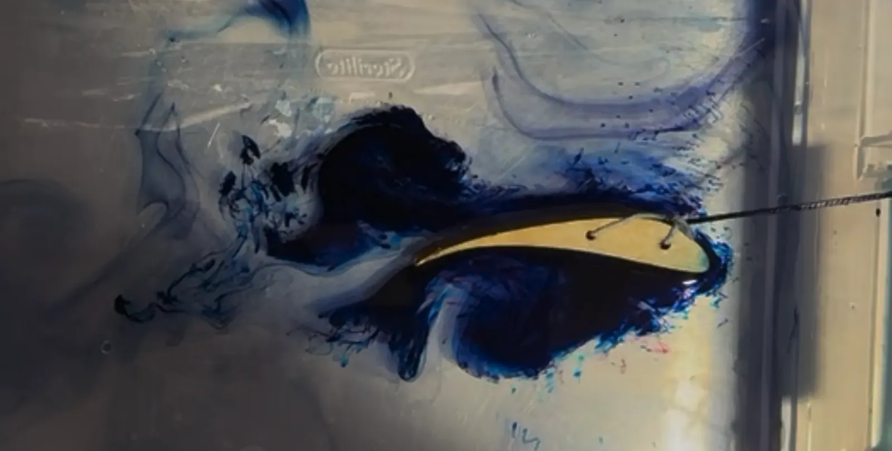
Flow separation near the trailing edge 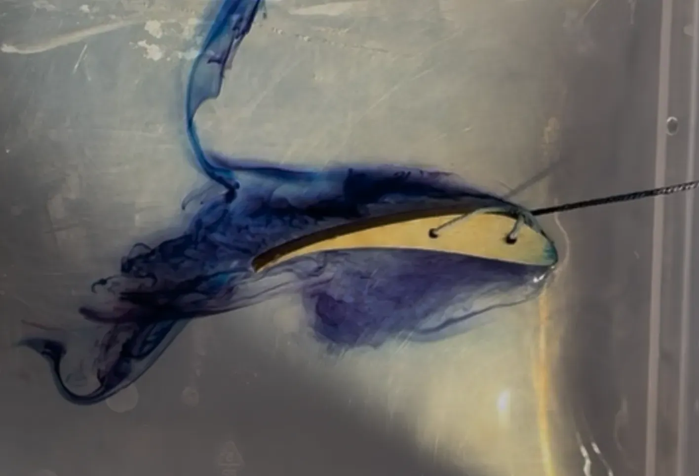
Top and bottom flows comparison - Additionally, due to the nature of our construction, our surface had small imperfections making turbulent flow easier to achieve.
Experimental Difficulties
In order to do this lab, we went through dozens of trials, attempting to display each type of fluid motion. First we ran into challenges making the dye display clear patterns in the water. Sometimes we added too much and the water became too dark, and other times there was too little and we couldn’t see the motion. While we never quite solved this issue, one strategy we use for improved consistency was wiping a little dye on the front of our airfoil so that it spread out into the water once motion began.
Achieved Flows
- Creeping Flow
- We attempted to create a creeping flow by slowing down our velocity significantly, however the Reynolds Number needed to achieve these streamlines was too small for us to display.
- Laminar Flow
- While it is hard to see in many of our flow visualizations, at some of our lower speeds, we were able to see laminar flow, especially coming off the bottom of our airfoil.
- Turbulent Flow / Separation
- Most of our trials ended with turbulent flow, with some achieving separation, but most displaying vortices cascading down over the airfoil.
Reynolds Number and Drag Coefficient Estimates:
| Trial Number | Speed | Reynolds Number Estimate |
| Airfoil #1 | ||
| Airfoil #2 | ||
| Airfoil #3 |
Pepper Motion
Qualitative Observations:
- Using pepper made the streamlines easier to observe and more uniform since it filled the whole water surface. On the upper surface of the airfoil, the flow appeared laminar when dragged through slowly, as the pepper mostly stayed in place with only slight vertical movement. In contrast, the pepper on the lower surface circulated, indicating more disturbed or turbulent flow.
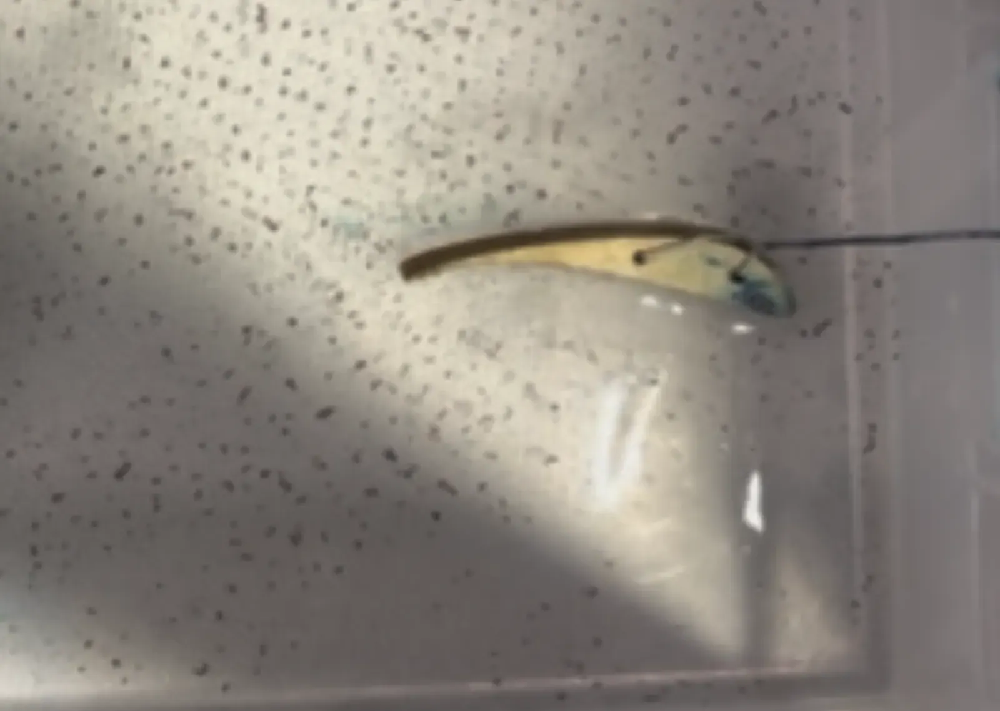
PIV Software Results:
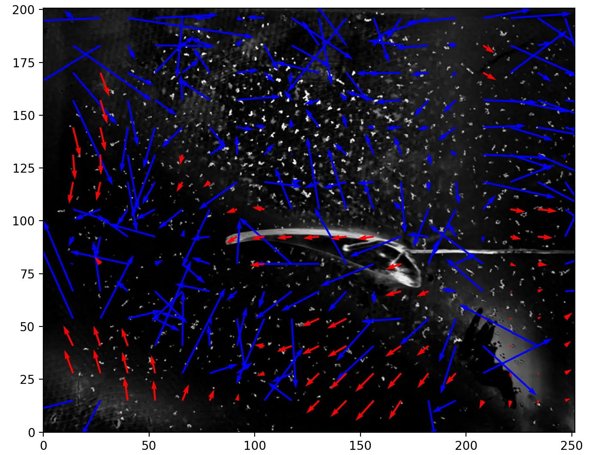
What We Found
Things to Ponder:
Reflections:
- What we learned
- This experiment gave us a great opportunity to visualize the actual effects of different types of fluid flow.
- What we were most proud of
- What took a while (was tough)
- Most spectacular failure
Originally written in Notion.